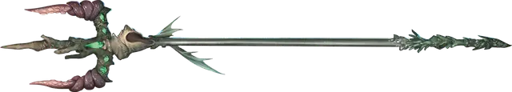

Трезубец командования рыбами
Trident of Fish Command
Оружие (трезубец), необычное (требуется настройка)

Рекомендованная стоимость 101-500 зм
Этот трезубец — магическое оружие. У него есть 3 заряда. Если вы его держите, вы можете действием потратить 1 заряд, чтобы наложить им заклинание подчинение зверя [dominate beast] (Сл спасброска 15) на зверя, у которого есть врождённая скорость плавания. Трезубец ежедневно восстанавливает 1к3 заряда на рассвете.